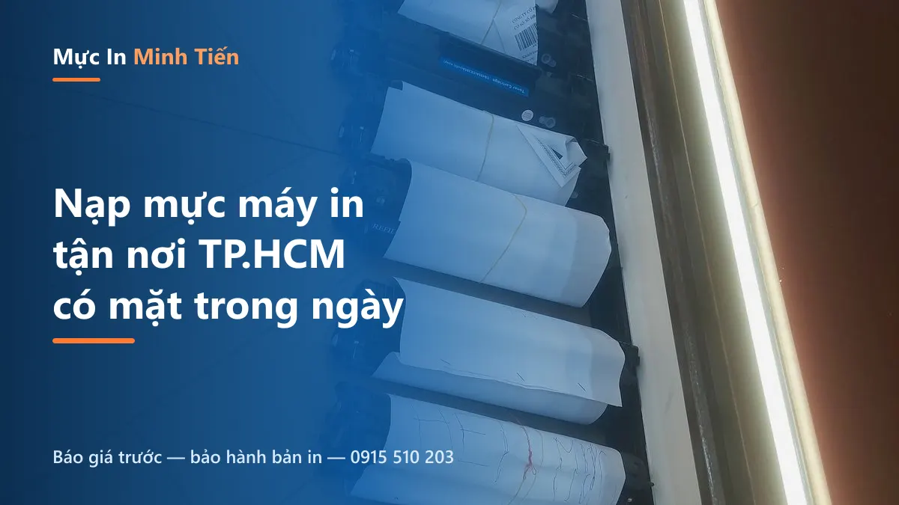
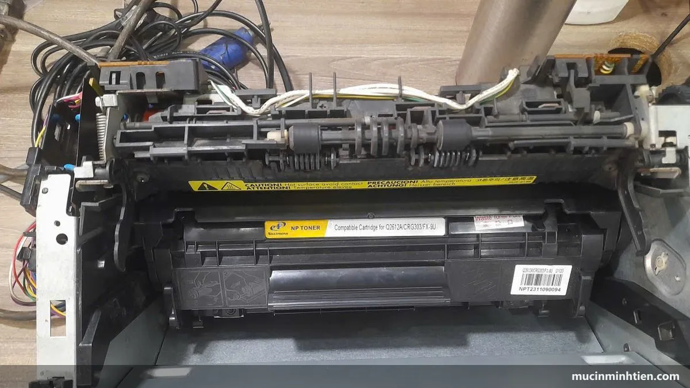

Nạp mực máy in tận nơi tại TP.HCM
Đổ mực, bơm mực, thay mực máy in ngay tại nhà và văn phòng của bạn. Kỹ thuật viên Mực In Minh Tiến có mặt nhanh trong khu vực TP.HCM, báo giá rõ ràng trước khi làm và bảo hành bản in sau khi nạp.
Máy in hết mực giữa lúc cần in gấp là tình huống ai cũng từng gặp. Thay vì tháo hộp mực mang ra tiệm rồi chờ đợi, dịch vụ nạp mực máy in tận nơi giúp bạn xử lý ngay tại chỗ: kỹ thuật viên mang đủ đồ nghề đến, nạp mực đúng chủng loại, kiểm tra bản in và bàn giao trong khoảng 10–20 phút cho hộp mực laser thông thường.
Mực In Minh Tiến nhận đổ mực, bơm mực, thay mực cho hầu hết các dòng máy in laser và máy in phun đang phổ biến của HP, Canon, Brother, Epson, Samsung — phục vụ khách cá nhân, văn phòng, đại lý và trường học tại TP.HCM.
Nạp mực, đổ mực, bơm mực — gọi cách nào cũng được
Khách hay hỏi bốn cách gọi này có phải là bốn dịch vụ khác nhau không. Câu trả lời ngắn: ba cách đầu là một việc, chỉ khác cách gọi theo vùng miền. Nhưng có một cách gọi là việc khác thật, và nhầm chỗ đó thì báo giá lệch hẳn:
- Nạp mực — cách gọi phổ biến nhất, dùng chung cho cả máy laser và máy phun.
- Đổ mực — cùng nghĩa với nạp mực, hay nghe ở miền Nam.
- Bơm mực — cũng cùng nghĩa. Chữ "bơm" hợp với máy in phun hơn vì mực ở dạng lỏng, nhưng nhiều người vẫn nói bơm mực cho máy laser.
- Thay mực — cái này khác. Thay mực là lắp hộp mực mới vào, không nạp lại hộp cũ. Giá cao hơn nạp nhưng bản in ổn định hơn, và đôi khi là lựa chọn bắt buộc khi hộp cũ đã hỏng ruột.
Nên khi gọi, bạn cứ nói theo cách quen thuộc — kỹ thuật viên sẽ hỏi lại model máy để chốt đúng việc và đúng giá. Dù bạn cần nạp mực máy in tại nhà hay tại văn phòng, quy trình và mức giá là như nhau.

Vì sao nên nạp mực tận nơi?
Không phải chờ
Không tháo máy mang đi. Kỹ thuật đến tận nơi, xử lý tại chỗ, in được ngay.
Báo giá trước
Giá minh bạch theo dòng mực, chốt trước khi làm, không phát sinh giữa chừng.
Đúng loại mực
Dùng đúng mực cho từng dòng máy, hạn chế lem, tắc đầu phun, sọc trang.
Bảo hành bản in
Kiểm tra chất lượng in trước khi bàn giao và bảo hành theo cam kết.
Giá nạp mực máy in tham khảo
Mức giá tham khảo cho khách lẻ tại TP.HCM. Giá cụ thể phụ thuộc dòng máy và tình trạng hộp mực — gọi 0915 510 203 để được báo giá chính xác.
| Dịch vụ | Dòng máy áp dụng | Giá tham khảo |
|---|---|---|
| Nạp mực hộp mực laser | HP, Canon, Brother (12A, 85A, 337, TN-2380…) | 80.000 – 150.000 đ |
| Bơm mực máy in phun (mỗi màu) | Epson, Canon dòng phun | từ 60.000 đ/màu |
| Thay trống từ (drum) | Máy in laser HP, Canon, Brother | từ 120.000 đ |
| Thay gạt mực, trục cao su | Tùy dòng máy | Liên hệ |
| Vệ sinh máy in tận nơi | Tất cả các dòng | từ 100.000 đ |
Lưu ý cách đọc bảng giá: con số ở trên là giá dịch vụ trọn gói tận nơi — đã gồm linh kiện, công thay và công đi lại. Trong bảng giá 773 mã và trong các bài hướng dẫn, chúng tôi ghi giá linh kiện rời nên con số thấp hơn: ví dụ drum rời từ 39.000đ, còn thay drum tận nơi trọn gói từ 120.000đ. Hai con số không mâu thuẫn, chỉ là hai thứ khác nhau.
Nếu chưa rõ máy của mình nên nạp mực hay thay hộp mực mới, cứ gọi để được tư vấn phương án tiết kiệm nhất — hoặc đọc tiếp phần dưới để tự tính.
Nạp mực hay thay hộp mực: tính bằng chi phí mỗi trang
Câu hỏi này quyết định phần lớn số tiền bạn bỏ ra cho máy in mỗi năm, và nó có công thức chứ không phải cảm tính.
Cách tính đúng không phải so giá nạp với giá hộp mực, mà là lấy chi phí chia cho số trang in được. Một hộp mực laser phổ thông cho khoảng 1.600–3.100 trang tùy mã, nên phép tính rất nhanh:
- Nạp mực 80.000–150.000đ cho khoảng 2.000 trang → tương đương 40–75đ mỗi trang.
- Hộp mực dựng mới 160.000–250.000đ cho cùng số trang → khoảng 80–125đ mỗi trang.
- Hộp mực chính hãng thì cao hơn nữa, nhưng đổi lại là bản in ổn định nhất và ít rủi ro nhất.
Tức là nạp mực rẻ hơn khoảng một nửa — miễn là hộp mực còn tốt. Chỗ nhiều người tính sai là quên rằng ruột hộp mực có tuổi thọ riêng: nạp lần thứ tư, thứ năm trên một hộp đã mòn drum và chai gạt thì bản in hỏng, in lại tốn giấy, và cuối cùng vẫn phải thay — thành ra đắt hơn.
Nguyên tắc thực tế: hai tới ba lần nạp thì thay ruột gồm drum và gạt mực; từ lần thứ tư trở đi thì cân nhắc thay hộp dựng mới. Vỏ hộp bền hơn ruột rất nhiều, và tiết kiệm ở lần nạp thứ tư thường phải trả bằng một ca sọc kéo dài.
Máy của bạn dùng mã mực nào
Biết đúng mã mực giúp báo giá chính xác ngay qua điện thoại, khỏi phải chờ kỹ thuật viên tới xem.
| Mã mực | Máy thường dùng | Số trang | Xem chi tiết |
|---|---|---|---|
| 12A / Canon 303 | HP 1010, 1020, M1005 · Canon LBP2900, 3000 | ~2.000 | Hộp mực 12A |
| 85A / Canon 325 | HP P1102, M1132, M1212 · Canon LBP6030, MF3010 | ~1.600 | Canon 325 |
| 35A | HP P1005, P1006, P1102 · Canon LBP3050 | ~1.500 | Hộp mực 35A |
| 107A / W1107A | HP Laser 107a, 107w, MFP 135a, 135w | ~1.000 | Hộp mực 107A |
| 26A / CF226A | HP LaserJet Pro M402, M426 | ~3.100 | Hộp mực 26A |
| Canon 337 | Canon MF211, MF3010, MF244dw, MF249dw | ~2.400 | Canon 337 |
| TN-2380 | Brother HL-L2321D, L2361DN, MFC-L2701D | ~2.600 | TN-2380 |
| Epson 003 | Epson L1110, L3110, L3210, L3250 (máy phun) | ~4.500 đen | Mực 003 |
Không thấy mã của máy mình? Dùng công cụ tra hộp mực theo model hoặc xem hết ở mục tra theo mã mực. Số trang là con số công bố ở độ phủ 5%, in nhiều bảng biểu và ảnh thì thực tế thấp hơn.
Khi nào nạp mực không giải quyết được vấn đề
Có những lỗi mà nạp bao nhiêu lần cũng không hết, vì nguyên nhân không nằm ở lượng mực.
Đây là phần chúng tôi muốn nói rõ trước, để bạn khỏi tốn một lần nạp mực vô ích:
- Sọc đen dọc sắc nét, đứng yên một vị trí — drum đã xước. Nạp mực không hết, phải thay drum. Cách nhận bệnh ở bài máy in bị sọc đen dọc.
- Vệt sọc lặp lại đều đặn theo chu kỳ — một trục nào đó hỏng bề mặt. Đo khoảng cách giữa hai vệt là ra đúng bộ phận, xem máy in bị sọc ngang.
- Vệt trắng dọc, mất chữ theo cột — vật lạ chặn khe mực, trục từ mòn hoặc cụm quang bám bụi. Chi tiết ở máy in bị sọc trắng dọc.
- Chạm tay vào bản in là dính mực — lỗi cụm sấy, không liên quan hộp mực. Xem máy in bị lem mực.
- Giấy ra trắng hoàn toàn dù hộp còn mực — trục từ mất từ tính, seal chưa gỡ hoặc cụm quang bị che. Xem máy in ra giấy trắng.
Kỹ thuật viên tới nơi sẽ nhìn tờ bản in lỗi trước khi mở hộp mực, chính vì vậy. Nếu đúng là lỗi linh kiện, chúng tôi báo giá thay đúng bộ phận đó thay vì nạp mực rồi để bạn gọi lại lần nữa.
Nạp mực laser và bơm mực máy in phun khác nhau thế nào
Nhiều người gọi chung là "đổ mực" nhưng hai loại máy này có quy trình khác hẳn, và giá cũng tính khác.
Máy in laser — nạp mực bột vào hộp mực
Hộp mực được tháo ra khỏi máy, đổ hết mực thải, vệ sinh khoang và khe gạt, nạp mực bột mới đúng chủng loại, kiểm tra drum và gạt mực, lắp lại rồi in thử. Mất khoảng 10–20 phút. Tính tiền theo hộp mực, 80.000–150.000đ tùy dòng.
Điểm quan trọng nhất là đúng chủng loại mực bột. Mực sai kích thước hạt mài mòn lưỡi gạt và trục từ rất nhanh — máy in vẫn chạy, nhưng vài trăm trang sau là bắt đầu sọc, và lúc đó chi phí sửa vượt xa khoản tiết kiệm trên hộp mực.
Máy in phun — châm mực nước vào bình
Máy dòng bình mực ngoài như Epson L, Canon G thì châm mực lỏng vào từng bình theo màu, tính tiền theo màu, từ 60.000đ mỗi màu. Sau khi châm phải xác nhận mức mực với máy, vì máy đếm mực bằng phần mềm chứ không đo thật trong bình — không làm bước này thì châm đầy máy vẫn báo hết.
Máy phun còn có hai thứ máy laser không có: đầu phun dễ tắc nếu để lâu không in, và bộ đếm mực thải sẽ khoá máy khi đầy. Chi tiết ở bài vệ sinh đầu phun Epson và tràn bộ đếm mực thải.
Chuẩn bị gì trước khi kỹ thuật viên tới
Ba thứ này rút ngắn thời gian đáng kể và giúp báo giá chính xác ngay từ cuộc gọi:
- Tên model máy in. In ở mặt trước máy hoặc trên tem dán phía sau. Biết model là biết luôn mã mực và giá, khỏi phải chờ tới nơi mới báo.
- Một tờ bản in lỗi, nếu máy đang in mờ, sọc hay lem. Nhìn tờ giấy là đoán được bệnh — đây là thứ hữu ích nhất bạn có thể chuẩn bị.
- Chỗ đặt máy đủ sáng và có ổ cắm. Kỹ thuật viên cần in thử sau khi nạp để xác nhận trước khi bàn giao.
Nếu văn phòng có nhiều máy, gom lại một lần gọi sẽ tiết kiệm hơn cho cả hai bên — báo trước số lượng máy để được báo giá theo lô.
Nạp mực tận nơi 4 bước

Gọi / nhắn Zalo
Báo dòng máy in hoặc mã hộp mực và khu vực của bạn để được tư vấn.
Chốt giá & hẹn giờ
Báo giá rõ ràng, hẹn thời gian kỹ thuật viên đến tận nơi trong ngày.
Nạp mực tại chỗ
Nạp đúng loại mực, vệ sinh trống từ, kiểm tra và căn chỉnh bản in.
Bàn giao & bảo hành
In thử, xác nhận chất lượng, thanh toán và bảo hành theo cam kết.
Nạp mực theo hãng máy in
Nạp mực máy in HP
Các dòng HP LaserJet phổ biến như 12A, 85A, 107A, 79A nạp mực nhanh, cho bản in đậm nét. Kỹ thuật viên kiểm tra trống từ và gạt mực để tránh sọc, lem sau khi nạp.
Nạp mực máy in Canon
Máy in laser Canon dòng LBP, MF (Canon 337, 052, 325…) được nạp đúng loại mực. Với lỗi thường gặp "máy in Canon không nhận hộp mực", kỹ thuật viên xử lý reset và kiểm tra chip đi kèm.
Nạp mực máy in Brother
Hộp mực Brother (TN-2360, TN-2380…) đi kèm trống riêng, cần reset bộ đếm sau khi nạp. Chúng tôi nạp mực và reset đúng cách để máy tiếp tục báo còn mực.
Bơm mực máy in phun Epson
Máy in phun Epson (L3110, L3210, L3250, L1210…) được bơm đúng mực từng màu, kiểm tra đầu phun, hạn chế tình trạng tắc và mất màu. Nếu máy báo lỗi đèn đỏ, kỹ thuật viên kiểm tra thêm hộp mực thải.
Nạp mực tận nơi các quận TP.HCM
Kỹ thuật viên nhận nạp mực, sửa máy in tận nơi tại các quận trung tâm và lân cận. Chúng tôi đang bổ sung trang thông tin riêng cho từng khu vực.
Hỏi & đáp về nạp mực máy in
Nạp mực máy in tận nơi giá bao nhiêu?
Đổ mực máy in có ảnh hưởng gì đến máy không?
Nạp mực tận nơi mất bao lâu?
Khi nào nên thay hộp mực mới thay vì nạp mực?
Một hộp mực nạp lại được mấy lần?
Đổ mực tận nơi và mang ra tiệm khác nhau thế nào về chất lượng?
Nạp mực xong máy vẫn báo hết mực thì sao?
Cần chuẩn bị gì trước khi kỹ thuật viên tới?
Hướng dẫn xử lý lỗi máy in thường gặp
Trước khi gọi thợ, bạn có thể tự kiểm tra theo các hướng dẫn chi tiết do kỹ thuật viên của chúng tôi biên soạn.